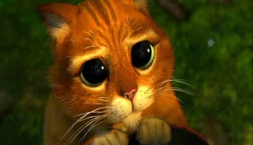

chekmebiani kata
ჩექმებიანი კატა (ინგლ. Puss in Boots) — 2011 წლის ამერიკული ანიმაციური ფილმი. ეფუძნება შარლ პეროს ზღაპარს, რომელიც ასევე გამოყენებულია ანიმაციური ფილმების სერია „შრეკში“. მის როლს ახმოვანებს ანტონიო ბანდერასი. ფილმის პროდიუსერები არიან გილერმო დელ ტორო და ენდრიუ ადამსონი, ხოლო რეჟისორი - კრის მილერი.
